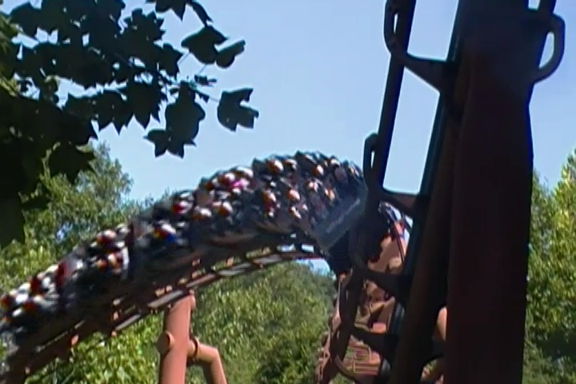
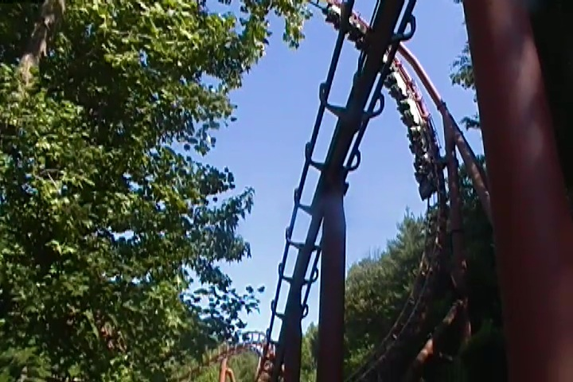
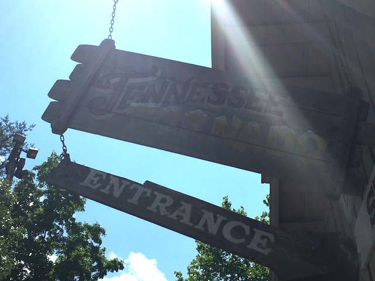

| |
Tennessee Tornado Review

We're here at Dollywood. Today's ride we'll be reviewing for you is Tennessee Tornado. This is an Arrow Multi-Looper, and...damn! This ride is good! It's really freaking good! I know people generally aren't huge fans of the Arrow Multi-Loopers (and they really are becoming an endangered species), but people really seem to love this ride, and some call it one of Arrow's best coasters. And yeah. That's pretty much true. I know this is one of their later coasters they made, just shortly before they made X2 and went bankrupt. So who knows? Maybe we would've gotten many more awesome rides like Tennessee Tornado if Arrow never went bankrupt. But at least we got this awesome ride. So let's hop in the cars, pull down the OTSRs, and we're off! We head down a dip, around a turn, and start climbing up the lifthill. We're pretty much just climbing up the hillside. There's no view of Dollywood or anything. Just heading straight up into the Smoky Mountains. We eventually reach the top, though it's hard to see how high we are, since we're still essentially on the ground. Just on a mountain. We head down a small hill, and go around a banked turn at the top of the mountain. OK. Now we're looking down the mountain, and we're pretty high up. We see a shed and TAKE THE TUNNEL!!!!! In there, we have the first drop. It's an intersting first drop. You just sort of feel yourself accelerate. And hey, in the back, you actually get some decent airtime. So far, this is pretty good. So we blast out of the tunnel, at full speed. And we head into the vertical loop. Now this is something special. You see, for a while, Arrow was only able to make a loop of one size. Those small loops. So that's why on something like Viper, you see it go up this giant inline only to have one of those tiny loops way up in the sky. But nope. On Tennessee Tornado, they finally just build a giant loop. And while it may look a little funky, it rides perfectly fine. You just soar through the giant loop like it's nothing. We then go through this one sort of curved hill. Now you might be worried about an element like this on other Arrows. But nope. Smooth as glass here. We then dip down and go into a much smaller, more typical Arrow loop. All right. We get some good positive Gs here. We then go through a sidewinder element. You initially brace, but no need to. Tennessee Tornado is smooth as glass, and even this element doesn't have a smack to it. We go through another sort of curved hill, pop up, and glide right into the brake run. Wait. That's it? Yeah. The one complaint I have with Tennessee Tornado is that it's a really short ride. A REALLY short ride. You really expect there to be more to the ride. Most other rides are much longer. But part of the reason I complain about how short it is is because of how much I like the little bit that the ride has, and want it to keep on going. So yeah. Definetly one of Arrow's best rides, and something totally worth checking out at Dollywood.
8/10
Location: Dollywood
Opened: 1999
Built by: Arrow
Last Ridden: July 24, 2019
Tennessee Tornado Photos





Home
|